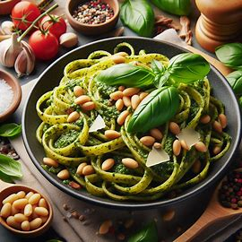

Destaques
Receitas Populares: As Favoritas da Semana que Todos Estão Buscando!.

Macarrão ao Pesto
Delicioso macarrão ao pesto com manjericão fresco, pinhões e queijo parmesão.
Ver Receita
Salmão Grelhado com Molho
Salmão fresco grelhado perfeitamente, servido com um delicioso molho de limão e ervas..
Ver ReceitaTiramisu Italiano
Uma sobremesa clássica italiana com camadas de biscoitos de champanhe, café, mascarpone e cacau em pó
Ver Receita